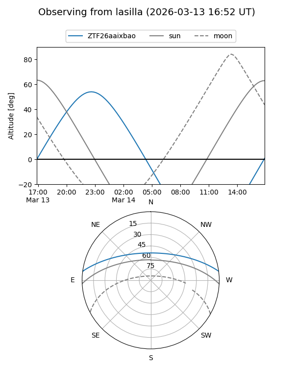
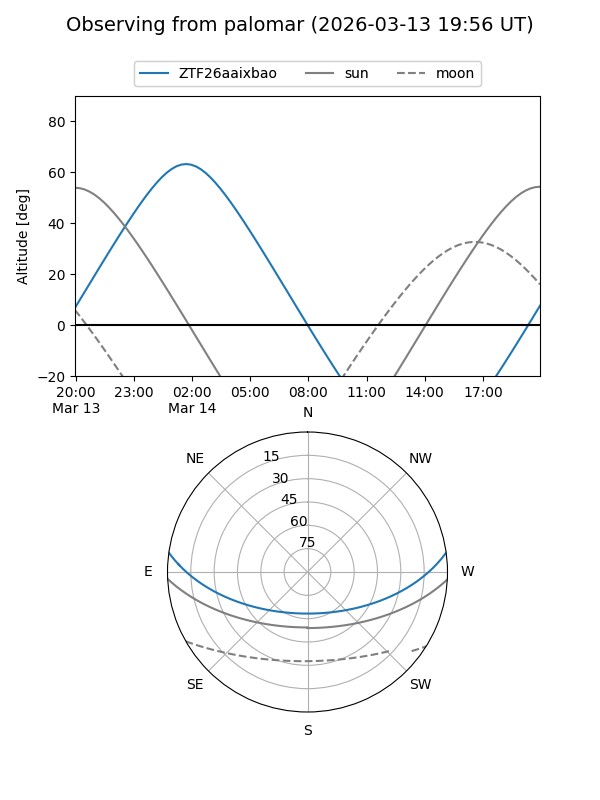
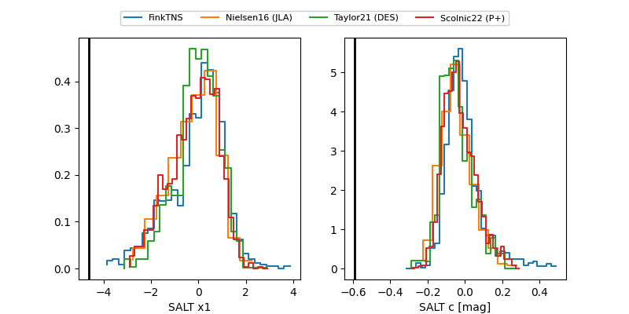

ZTF26aaixbao
Target ZTF26aaixbao at 2026-03-14 03:40
Aliases and brokers:
FINK: link
Lasair: link
ALeRCE: link
alt names
ZTF26aaixbao (ztf,fink_ztf)
Coordinates:
equatorial (ra, dec) = 79.6997,+6.59409
equatorial (HMS+DMS) = 05:18:47.93,+06:35:38.72
galactic (l, b) = (195.8677,-17.17858)
Flags:
likely cv
Photometry:
last ztfg=18.57, ztfr=18.21
7 ztfg, 6 ztfr detections
Lightcurve
Visibility


Additional plots
